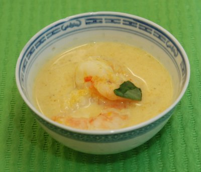

| Zutaten für 4 Personen: | |
| 1 El | Erdnussöl |
| 1 | Knoblauchzehe |
| 2 | Zwiebeln |
| 1 Stange | Zitronengras |
| 1 | Limonenblatt |
| 1 Kl | Krevettenpaste |
| 1 Würfel für 5 dl | Hühnerbouillon |
| 500 g | Kürbis |
| 4 dl | Kokosmilch |
| 2 kleine | rote Chilis |
| 250 g | Krevetten (gekocht und tiefgekühlt) |
| 1 Zweig | asiatischer Basilikum |
Die Zwiebeln fein schneiden. Knoblauch schälen.
Kürbis in kleine Würfel schneiden.
Die Bouillon zubereiten.
In einer Pfanne das Erdnussöl erhitzen und die Zwiebeln darin glasig dünsten und den Knoblauch dazu pressen.
Das Zitronengras bis zum Stielansatz halbieren, mit dem Messergriff quetschen und zugeben.
Das Limonenblatt zwischen den Fingern quetschen und zugeben.
Die Krevettenpaste dazugeben und auf dem Herd auf mittlerer Stufe dünsten.
Mit der Hühnerbouillon ablöschen.
Die Kürbiswürfel zugeben.
Die Kokosmilch zugeben und die Suppe aufkochen.
Die Suppe 10-15 Minuten kochen lassen, bis der Kürbis gar ist.
Die Chilis entkernen und sehr klein schneiden. Zugeben.
Kurz vor dem Servieren die Krevetten zugeben und vorsichtig untermischen.
Die Suppe anrichten. Dazu die Basilikumblätter in Streifen schneiden und als Dekoration darauf legen.
Kürbiskochkurs von Patricia Krummenacher am 25.9.2009.
Hat ausgezeichnet geschmeckt. RE 25.9.2009
@LINKBACK_TAG@ @WAKELOCK@